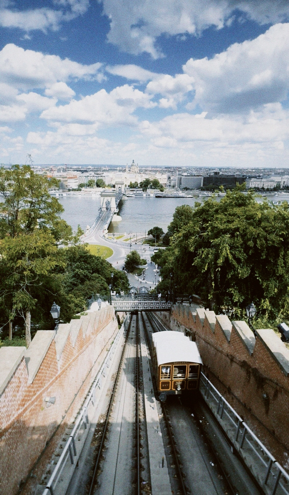

Budapest, 2024
The Buda Castle Funicular descending toward the Danube in Budapest, Hungary, with the Chain Bridge, river and city skyline beyond under a dramatic cloud-filled sky.

The Buda Castle Funicular descending toward the Danube in Budapest, Hungary, with the Chain Bridge, river and city skyline beyond under a dramatic cloud-filled sky.